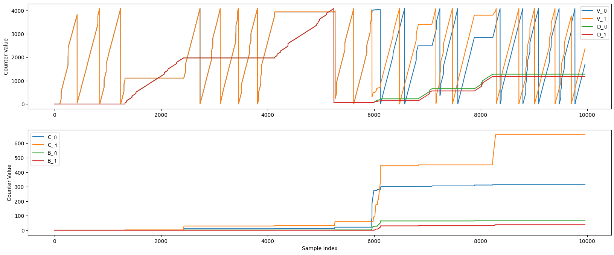

AMDS Interface¶
This document describes the built-in AMDC drivers which can be used to interface with the AMDS.
Attention
Before attempting to use these drivers, make sure to read about the AMDS in its documentation.
AMDS Firmware Version¶
Ensure that your AMDS firmware version matches your AMDC firmware version using the following table:
AMDC Version |
AMDS Version |
|---|---|
v1.3.x or greater |
v2.x.x |
v1.2.x or lesser |
v1.x.x |
Configure AMDS Hardware¶
First, the AMDS hardware needs to be configured:
Supply 24V power to the AMDS via the screw terminals (LEDs should illuminate)
Install the four jumpers which select “daisy-chain” operation of the sensor cards. The daisy-chain mode is marked as
Don the silkscreen.Install the sensor cards. Since each SPI input is configured as daisy-chain, you need to populate the lower-number sensor cards before the higher, i.e., install 1 before 5. If you do not install the lower-number sensor card, the second sensor card in the daisy chain will not work.
Now that the hardware is configured, the AMDC firmware must be configured.
Include AMDS Code and Configure AMDC GPIO Port¶
By default, the AMDS drivers are not compiled into the C-code.
To enable, update the usr/user_config.h file and set the following define to 1:
#define USER_CONFIG_ENABLE_AMDS_SUPPORT (1)
Since the AMDS can be plugged into any of the GPIO ports, the AMDS driver inside the AMDC needs to be connected to the desired AMDC GPIO Port via the GPIO Mux interface. This configuration can be done via the Command Line Interface, or using functions in the C code:
Command Line Interface¶
Once the above #define is declared, the hardware will enable an AMDS interface app, this will show up as a set of amds commands at bootup. To enable AMDS usage in this app, we need to first route the mux to the appropriate ports. This is done through the hw mux gpio <port> <device> command call.
AMDC REV D¶
<port>is1-2– for REV D hardware utilizing this command interface, the AMDS should be connected to the top #1 port.<device>should be set to2for the AMDS connection
Once the gpio_mux is routed, we can now make inquiries to the AMDS for data. This is done through the amds <port> XXXX command structure described in the help interface. Note that <port> should be set to 1 for the top #1 port.
AMDC REV E and beyond¶
<port>is1-4<device>should be set to1for the AMDS connection
Once the gp3io_mux is routed, we can now make inquiries to the AMDS for data. This is done through the amds <port> XXXX command structure described in the help interface. Note that <port> ranges from 1-4 and should correspond to the GPIO port number your AMDS is connected to.
Configure GPIO/GP3IO Mux in Code¶
AMDC REV D¶
Use the gpio_mux FPGA IP block to configure the routing path.
Place the header file in the custom user app .c file
#include "drv/gpio_mux.h"
Place the code below into your custom user app init function. Modify the first variable in the function call to match the physical port connection joining the AMDC with the AMDS. Note this is zero-indexed and the GPIO port per the silk screen is one-indexed.
// Configure GPIO mux for the AMDS
// 0: top port on AMDC
// 1: bot port on AMDC
// GPIO_MUX_DEVICE1: Eddy Current Sensor IP block
// GPIO_MUX_DEVICE2: AMDS driver IP block
gpio_mux_set_device(0, GPIO_MUX_DEVICE2);
AMDC REV E and beyond¶
Similar process as above, except the file and function call are now gp3io, and the _DEVICE# has swapped.
Include the header file in the custom user app .c file
#include "drv/gp3io_mux.h"
Place the code below into your custom user app init function. Modify the GP3IO_MUX_#_BASE_ADDR define to match the physical port connection joining the AMDC with the AMDS.
// Configure GP3IO mux for the AMDS
// GP3IO_MUX_#_BASE_ADDR means AMDC GPIO Port #
// GP3IO_MUX_DEVICE1 is AMDS driver IP block
// GP3IO_MUX_DEVICE2 is Eddy Current Sensor IP block
gp3io_mux_set_device(GP3IO_MUX_1_BASE_ADDR, GP3IO_MUX_DEVICE1);
Enabling the AMDS in the Timing Manager¶
Triggering data acquisition on the AMDS is done via the AMDC Timing Manager. The Timing Manager triggers sensors to sample data aligned with the peaks and/or valleys of the PWM carrier, or at a sub-rate of these events. Run the command hw tm enable amds #, or include the following function in your user app init function:
// Enable data sampling for AMDS on GPIO Port #
timing_manager_enable_sensor(AMDS_1);
To learn more about how to enable sensors and how to configure triggering, please follow the Timing & Sensors tutorial.
Requesting and Retrieving Data from the AMDS¶
After the AMDS is triggered to begin sampling, each sensor card populated on the AMDS will sample and provide the data the processor on the mainboard. As soon as the mainboard has collected all the data from the sensor cards, the mainboard will automatically send all the data back to the AMDC, where the data for each sensor card will be made available in the corresponding channel’s data register. To learn more about the firmware interface between the AMDC and AMDS please see the AMDS Firmware documentation, and the AMDC driver code in the AMDC-Firmware repository. The FPGA code can be found in ip_repo/amdc_amds_1.0, and C code can be found in sdk/app_cpu1/common/drv/amds.c.
Use Sampled Data¶
After the data has been transmitted back to the AMDC from the AMDS, it can be used by the user application. User code can read the raw 16-bit signed integer value as sampled on the AMDS sensor cards by using the following driver:
int amds_get_data(uint8_t port, amds_channel_e channel, int32_t *out)
Note that get_data() is non-blocking – it will return the latest data that the AMDS sent, but will not trigger new data to be sent. This matches how the integrated ADCs work on the AMDC.
NOTE: The AMDS driver will make all data received from the mainboard available, even if the data became corrupted during transmission back to the AMDC.
Therefore, the user should also make use of the check_data_validity() function to verify that the data returned by get_data() was not corrupted during transmission. This function will return a byte (eight bits) where each bit represents the data validity for one of the eight channels on the AMDS. If this function returns 255, that implies that all channels returned valid data:
uint8_t amds_check_data_validity(uint8_t port)
To check the validity of all eight channels’ data, consider using the following code in a task callback:
void task_callback(void)
{
// ...
const uint8_t amds_port = 2;
int32_t out_ch_1, out_ch_2, out_ch_3, out_ch_4;
int32_t out_ch_5, out_ch_6, out_ch_7, out_ch_8;
// Check validity of latest data for the AMDS plugged into your GPIO port
uint8_t valid = amds_check_data_validity(amds_port);
if (valid == 0xFF) {
// Yay! 0xFF means the bits for all channels are valid!
// Read in values sampled on the AMDS (plugged into your GPIO port) from all channels:
int err;
err = amds_get_data(amds_port, AMDS_CH_1, &out_ch_1);
err = amds_get_data(amds_port, AMDS_CH_2, &out_ch_2);
err = amds_get_data(amds_port, AMDS_CH_3, &out_ch_3);
err = amds_get_data(amds_port, AMDS_CH_4, &out_ch_4);
err = amds_get_data(amds_port, AMDS_CH_5, &out_ch_5);
err = amds_get_data(amds_port, AMDS_CH_6, &out_ch_6);
err = amds_get_data(amds_port, AMDS_CH_7, &out_ch_7);
err = amds_get_data(amds_port, AMDS_CH_8, &out_ch_8);
// Now, "out" variables contain the sign-extended 16-bit
// sample value for each channel
}
else {
// Else, you decide what to do if there was invalid data this cycle
// ...
}
// ...
}
To check the validity of only certain channels’ data, consider the following instead:
void task_callback(void)
{
// ...
const uint8_t amds_port = 2;
int32_t out_ch_1, out_ch_3, out_ch_5, out_ch_6;
uint8_t my_channels = AMDS_CH_1_VALID_MASK | AMDS_CH_3_VALID_MASK | AMDS_CH_5_VALID_MASK | AMDS_CH_6_VALID_MASK;
// Check validity of latest data for the AMDS plugged into your GPIO port
uint8_t valid = amds_check_data_validity(amds_port);
if ((valid & my_channels) == my_channels) {
// Yay! Valid check matched
// Read in values sampled on the AMDS (plugged into your GPIO port) from your channels:
int err;
err = amds_get_data(amds_port, AMDS_CH_1, &out_ch_1);
err = amds_get_data(amds_port, AMDS_CH_3, &out_ch_3);
err = amds_get_data(amds_port, AMDS_CH_5, &out_ch_5);
err = amds_get_data(amds_port, AMDS_CH_6, &out_ch_6);
// Now, "out" variables contain the sign-extended 16-bit
// sample value for each channel
}
else {
// Else, you decide what to do if there was invalid data this cycle
// ...
}
// ...
}
Debugging¶
The AMDS-AMDC digital interface sometimes needs debugging if valid data does not appear from the AMDC drivers.
Trigger a Single Transmission¶
In the following commands, replace 1 with the GPIO port number of your AMDS board.
Turn off automatic sensor triggering by switching the Timing Manager mode:
hw tm mode MANUALInstruct the timing manager to send a single sensor trigger on the next PWM carrier peak/valley:
hw tm send_triggerPrint the validity of the new sample data:
amds 1 validPrint the received sample data to the terminal:
amds 1 data
The process above allows for scope-level debugging since you are manually triggering everything to happen.
AMDS Driver Debug Counters¶
The AMDC uses a FPGA IP block for the AMDS interface driver. It keeps track of the performance of the digital link to the AMDS via several counters in the FPGA. For each byte of data transmitted from the AMDS to AMDC, one counter is incremented within the FPGA driver.
At any time, you can read the counters via: amds 1 counters (or, programmatically via the associated C code API)
Validmeans a full byte of data was received is passed the parity check.Corruptmeans a full data byte was received, but the UART parity check failed (typically due to noise, EMI, etc).Timed out bytesis a timeout when the AMDC expected a byte from the AMDS, but it never showed up. Since this count is for a single data byte, it will typically only increment by a small amount when unplugging the cable connecting the AMDC and AMDS.Timed out datais a timeout for a full four-packet (12 byte) data stream. This counter will increment when the AMDC is requesting data from the AMDS but gets nothing back, which happens continuously when the cable connecting the AMDC and AMDS is fully unplugged.
If all the counters are stuck at zero, the mostly likely cause is that the AMDS is not enabled in the timing manager. If only the Timed out data counter is incrementing, the AMDS is either unplugged, or the GPIO mux configuration was not completed correctly. If the connection is made correctly and active, the value of the Valid counter should be continually incrementing.
Note
For all counters, since the UART link has two data lines, a separate 16-bit counter is used for each data line.
The counters command returns both counters concatenated into a 32-bit value.
For example, if the value is 0x0002 for the first UART data line and 0x0003 for the second UART data line, the counter will appear as: 0x00020003.
Example¶
Consider running this experiment: the AMDS-AMDC link is working and you are reading valid data. Then, the cable comes unplugged.
When the link is working, the
Validcounter will continuously be incrementing (and wrapping around at the 16-bit limit)As the cable comes unplugged, chances are, it will occur during some byte transmission. This will cause some corrupt data bytes and some individual bytes to timeout. The
CorruptandTimed out bytescounters may each increment a few times based on exactly how the cable became unplugged.After the cable is fully unplugged, the AMDC views every data stream requested as a data timeout, so the
Timed out datacounter will continuously increment. The other counters should remain frozen in their last value.
This debug counter behaviour can be seen occuring repeatedly in the following video captured during experimental testing. When connected, Valid is incrementing, and when disconnected, Timed out data is incrementing. The Corrupt and Timed out bytes counters increment as the transition is made between the connected and disconnected states.
The image below also shows a graphical capture of the counters incrementing their values.
{kind=link}
Upper Graph Legend Name |
Counter Name |
|---|---|
V_0 |
Valid Count - Data Line 0 |
V_1 |
Valid Count - Data Line 1 |
D_0 |
Timed out Data Count - Data Line 0 |
D_1 |
Timed out Data Count - Data Line 1 |
You can see in the upper graph that the Valid counters for both Data Lines 0 and 1 ramp up (and overflow back to zero) while the cable between the AMDC and AMDS is plugged in. At around time 1500, the cable is unplugged. The value of the Valid counter freezes, while the value of the Timed out data counter begins to ramp up. Around time 2200, the cable is plugged back in and the counters switch off, and unplugged again at time 4000.
Around time 6000, the cable is wiggled at the connector, rapidly connecting and disconnecting the two boards, to simulate a cable that is not fully plugged in. During this operating condition, the Valid and Timed out data counters rapidly switch off between ramping and freezing.
Lower Graph Legend Name |
Counter Name |
|---|---|
C_0 |
Corrupt Count - Data Line 0 |
C_1 |
Corrupt Count - Data Line 1 |
B_0 |
Timed out Byte Count - Data Line 0 |
B_1 |
Timed out Byte Count - Data Line 1 |
In the lower graph, the Corrupt and Timed out Byte counters for both data lines are shown. These counters should not really be increasing constantly during any operation, instead they may jump up a bit each time the cable becomes plugged in or unplugged, as a few individual data packets become corrupted or timeout.
The bytes become corrupted much more frequently when the cable is loosely-connected/jostled after time 6000.